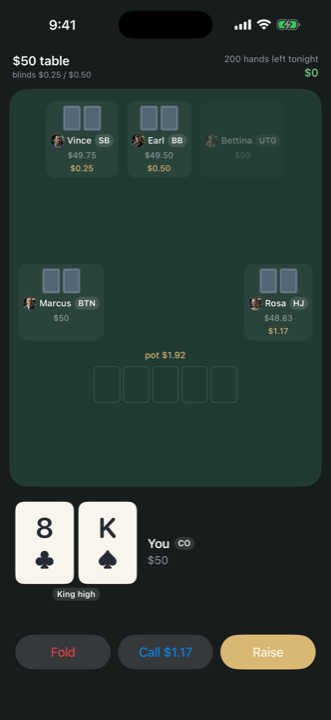
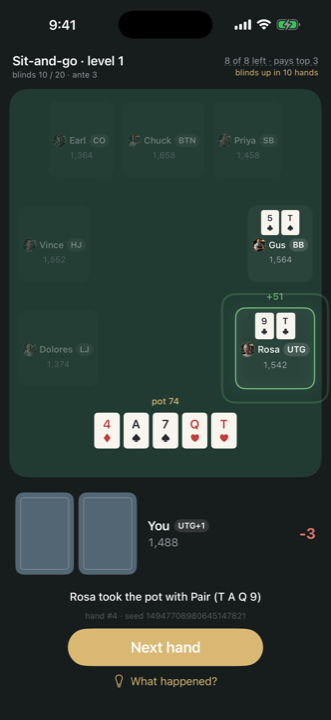
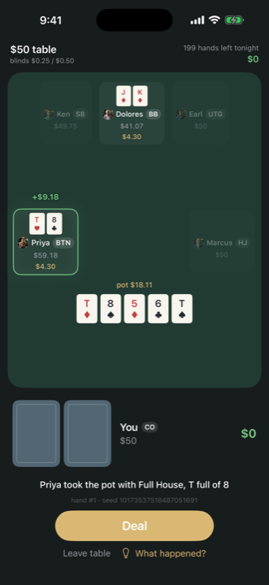

Hold'em Career
Single-player poker with real consequences and zero real money.
One bankroll. One life. Thirty-three players who remember you.
Coming to iPhone and iPad · $4.99 once · no in-app purchasesSingle-player poker with real consequences and zero real money.
One bankroll. One life. Thirty-three players who remember you.
Coming to iPhone and iPad · $4.99 once · no in-app purchases


You get a bankroll and a seat at the $50 table. Everything after that, you earn.
Hold'em Career is a roguelike poker career: sit down with exactly one buy-in, no rebuys, no top-offs. Win and climb toward the $1,000 game. Go broke and the run is over — the bankroll gone, the ladder reset, the story finished. What survives is what you've earned: milestones permanently raise the starting bankroll of every run that follows, and what you've learned about the players never resets at all.
There is no chip store. There is no way to buy your way back. The bankroll being unbuyable isn't a limitation — it's the entire point. When a bad river costs you a stack, it costs you something the game refuses to sell back to you, and that's what makes folding the right hand feel like a decision instead of a tap.
Thirty-three opponents, and not one of them is a difficulty slider. Marcus, the retired accountant, plays nine hands a night and has never once bluffed a river. Dolores wants to see every flop and will pay you for the privilege. The pros upstairs punish loose calls the way a real $5/$10 game does. Every character runs on the same decision engine with their own tendencies — and tilt is real here: stack someone and watch their next twenty hands get looser.
Play enough hands against someone and their dossier opens, one layer at a time: who they are, how they play, their actual numbers — and finally, if you've studied them and taken their whole stack at least once, the secret that beats them. The game keeps your head-to-head book too: your net at their table, who stacked whom. Prefer a purer challenge? Flip on Keep me in the dark and play everyone as a stranger.
Every hand is recorded — all cards, every action, and the reason behind every AI decision, captured at the moment it was made. Replay any hand with every hole card face-up and read exactly why Vince shoved the turn ("still steaming from the last pot" is a legitimate reason). No other poker game tells you why.
After each session, the coach reviews your play: pot-odds mistakes, positional leaks, the calls that cost you — computed against your actual hands, not generic advice. Career stats track your VPIP, PFR and win rate by seat, and every metric comes with a plain-English explanation of what good looks like.
No-Limit cash. Fixed-Limit cash. Eight-handed sit-and-go tournaments with rising blinds and antes from hand one. And events that come to town as you play: The Deep End (double stacks, a slow clock) and The Shootout — thirty-two runners at four tables; win yours to reach the final. Events return every few hundred hands you play. No daily timers, no login streaks — the schedule is yours.
And when it goes wrong: busted mid-run, someone at the table may stake you, at their terms. They take a cut of every winning night until you're square — and stiffing them burns that bridge for the rest of your career.
No real money, ever. No gambling, no cash-outs, no chip purchases. No ads, no accounts, no internet required — your career lives on your device and nowhere else, and the app collects nothing. Every hand deals from a seed shown in the app, so any hand can be replayed exactly; the AI never sees your cards. Forty-six achievements from First Orbit to The Unicorn, because bragging rights shouldn't touch game balance.